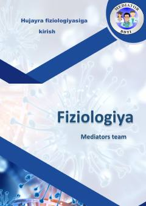

HFHujayra fiziologiyasi va membranalar orqali moddalar transportiga bag'ishlangan o'quv qo'llanma.
Ushbu qo'llanmada hujayra fiziologiyasiga kirish, moddalarning hujayra membranasi orqali tashilishi, oddiy va yengillashtirilgan diffuziya hamda aktiv transport jarayonlari batafsil yoritilgan. Shuningdek, hujayralararo aloqalar, kimyoviy messenjerlar va retseptorlarning vazifalari haqida ilmiy ma'lumotlar berilgan.